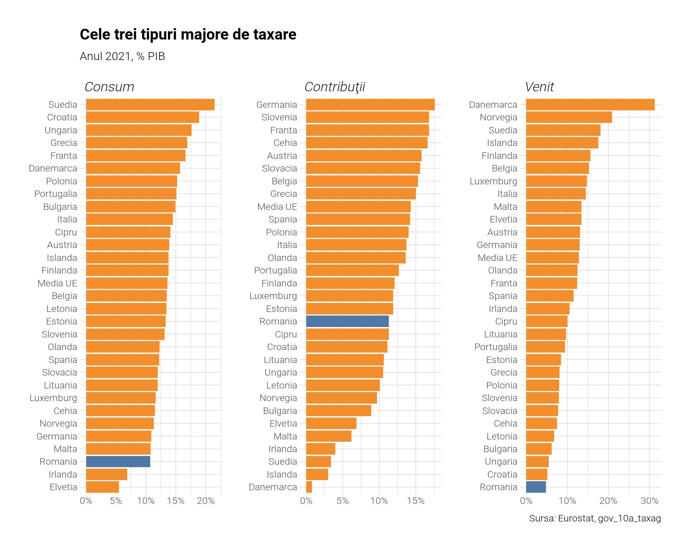
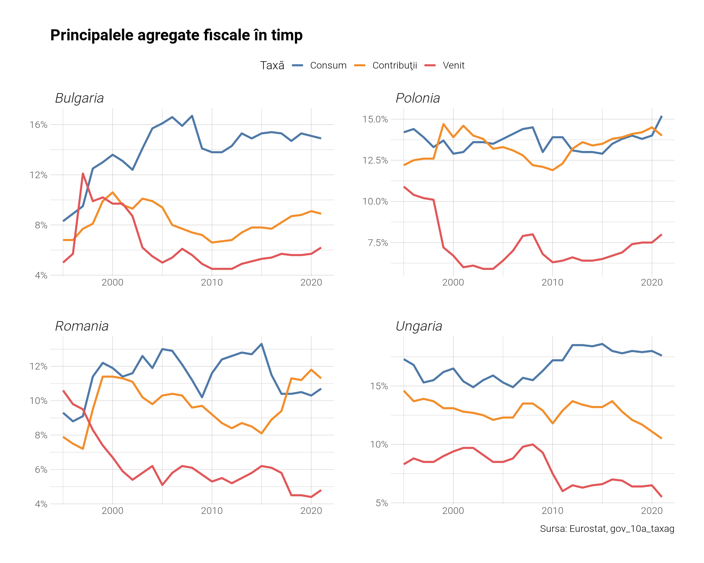
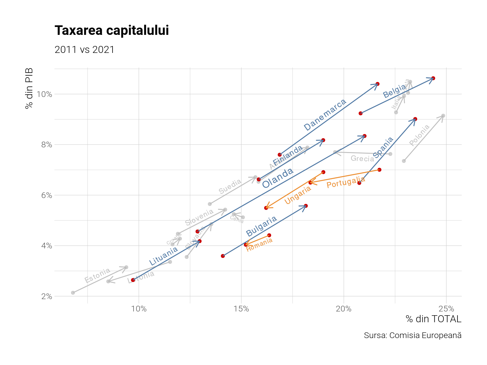
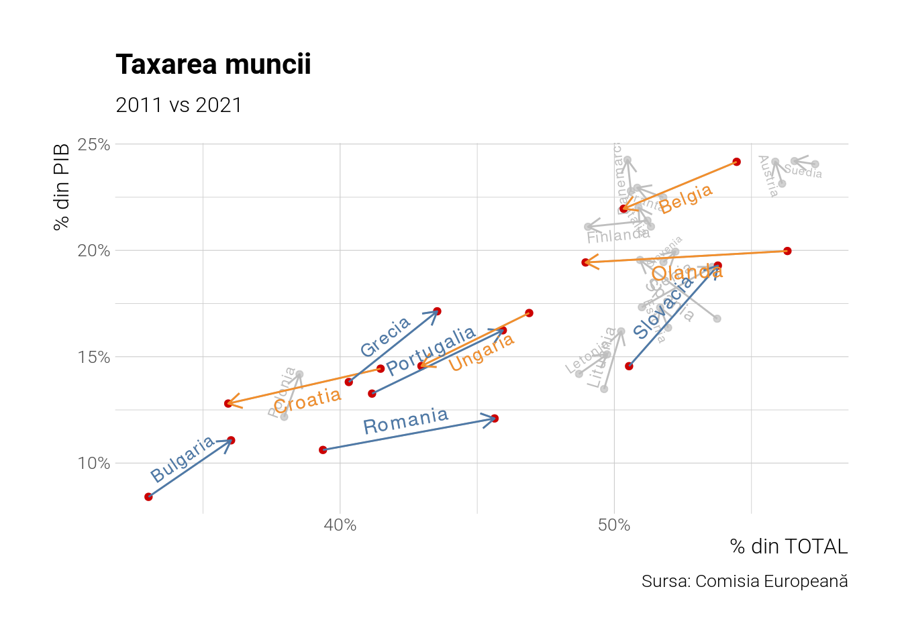
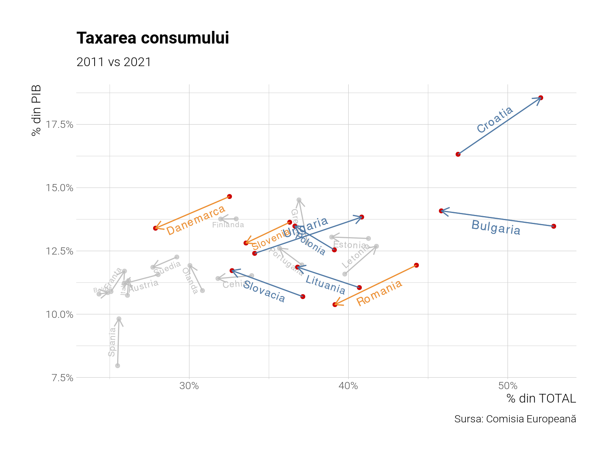
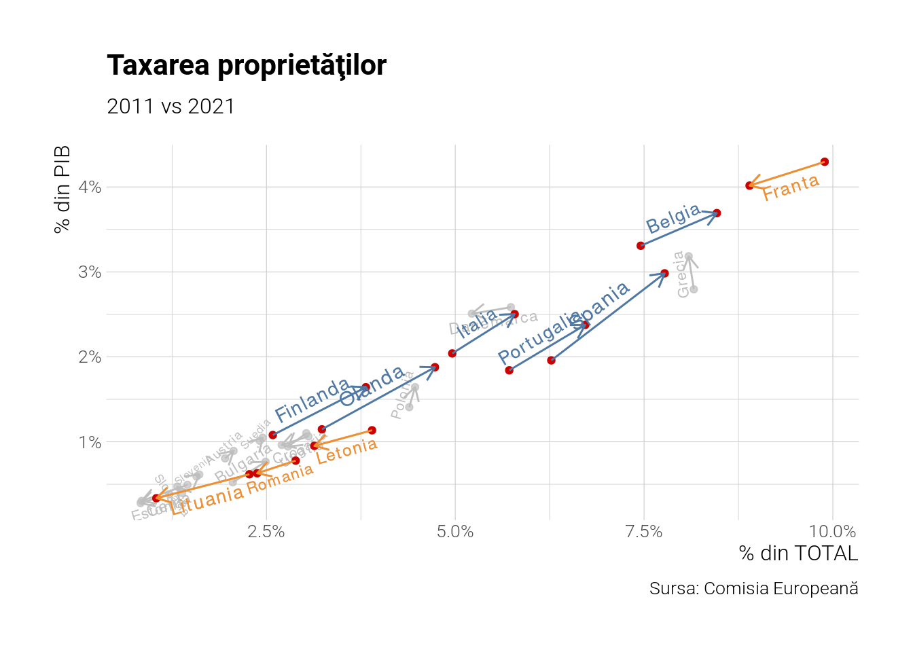

Eurostat are date şi despre veniturile bugetare, nu doar despre cheltuieli, pe care le-am analizat sumar într-un post anterior. Vom folosi în acest scop fişierul lor numit gov_10_taxag, cu informaţii despre veniturile din taxe, contribuţii, tot ce înseamnă venit fiscal.
Să vedem clasamentul per tipuri majore de taxe: pe consum, contribuţiile şi taxarea pe venit (care include impozitul pe venit personal şi impozitul pe profit). Avem trei categorii majore. Vom seta anul de referinţă 2021, ultimul pentru care avem date la toate ţările.
Code
df %>%filter(grepl("Taxes on production and imports|Net social|Taxes on income$", na_item), time=="2021-01-01") %>%mutate(na_item =gsub("Taxes on produc.+", "Consum", na_item) %>%gsub("Net social contr.+", "Contribuţii", .) %>%gsub("Taxes on income", "Venit", .)) %>%mutate(geo = tidytext::reorder_within(geo, within = na_item, values)) %>%ggplot(aes(x=geo, y=values)) +geom_col(aes(fill=grepl("Romania", geo)), show.legend =FALSE) + tidytext::scale_x_reordered() +coord_flip() +scale_y_continuous(labels=scales::percent_format(scale=1)) +scale_fill_tableau(direction =-1) +facet_wrap(~na_item, ncol=3, scales='free') +labs(x=NULL, y=NULL, title="Cele trei tipuri majore de taxare", subtitle="Anul 2021, % PIB",caption="Sursa: Eurostat, gov_10a_taxag") +theme(legend.position ="top")

Figure 1: Tipuri principale de taxe
Ca procent din PIB suntem codaşi la toate aceste categorii, mai puţin contribuţii, lucru explicabil prin procentul mic de venituri fiscale colectate din PIB în ţara noastră, unde suntem de asemenea ultimii în afară de Irlanda. Nu mai ilustrez pentru că situaţia este ultra-cunoscută. Atenţie, ce vedem mai sunt sunt venituri din aceste taxe, nu taxarea efectivă pe care o resimte cetăţeanul. Cum e posibil să fim top la povară fiscală conform OECD (cum arătam într-un articol anterior) şi totuşi aşa de jos în clasamente la venituri ? O explicaţie ar fi baza scăzută de impozitare - avem foarte puţini salariaţi la mulţi pensionari, avem probleme de colectare la TVA, avem cotă unică de 10 % pe venituri, ceea ce ne face ultimii în Europa la procentul colectat din PIB la această categorie de venituri.
Dar cele trei tipuri sunt doar agregatele cele mai mari, Eurostat are date despre circa 93 de categorii de venituri, subcategorii ale categoriilor deja menţionate, dar nu vom intra în detalii de acest fel. În schimb, ne interesează desfăşurata în timp a acestor trei agregate principale.
Code
df %>%filter(grepl("Taxes on production and imports|Net social|Taxes on income$", na_item)) %>%mutate(na_item =gsub("Taxes on produc.+", "Consum", na_item) %>%gsub("Net social contr.+", "Contribuţii", .) %>%gsub("Taxes on income", "Venit", .)) %>%filter(grepl("Romania|Bulgaria|Polonia|Ungaria", geo)) %>%ggplot(aes(x=time, y=values, group=na_item)) +geom_line(aes(colour=na_item), size=1) +facet_wrap(~geo, ncol=2, scales='free') +scale_y_continuous(labels=scales::percent_format(scale=1)) +scale_color_tableau() +labs(title="Principalele agregate fiscale în timp", x=NULL, y=NULL,caption="Sursa: Eurostat, gov_10a_taxag", colour="Taxă") +theme(legend.position ="top")

Figure 2: Principalele agregate desfăşurate în timp
Acum vom face un lucru diferit şi vom studia veniturile din taxe după factorii de producţie implicaţi: capital, muncă, dar şi consum şi proprietate. Am ales aceste categorii pentru că ele sunt calculate special de Comisia Europeană şi Eurostat aici. Metodologia este şi ea tot în linkul respectiv. Vom vizualiza grafice în două axe şi doi ani distincţi: 2011 şi 2021. Pe orizontală avem procentul din total, pe verticală procentul din PIB. Săgeţile indică direcţia temporală, culoarea dacă vorbim de o creştere sau scădere.
grafice(x=x, var=capital, numar=10) +labs(title ="Taxarea capitalului", subtitle="2011 vs 2021",x="% din TOTAL", y="% din PIB",caption="Sursa: Comisia Europeană")

Figure 3: Taxarea capitalului
Code
#| fig-width: 8#| fig-height: 6#| fig-dpi: 200#| label: fig-munca#| fig-cap: Taxarea munciigrafice(x=x, var=munca, numar=10) +labs(title ="Taxarea muncii", subtitle="2011 vs 2021", x="% din TOTAL", y="% din PIB",caption="Sursa: Comisia Europeană")

Code
grafice(x=x, var=consum, numar=10) +labs(title ="Taxarea consumului", subtitle ="2011 vs 2021",x="% din TOTAL", y="% din PIB",caption="Sursa: Comisia Europeană")

Figure 4: Taxarea consumului
Code
#| fig-width: 8#| fig-height: 6#| fig-dpi: 200#| label: fig-proprietate#| fig-cap: Taxarea proprietăţiigrafice(x=x, var=proprietate, numar=10) +labs(title ="Taxarea proprietăţilor", subtitle="2011 vs 2021",x="% din TOTAL", y="% din PIB",caption="Sursa: Comisia Europeană")

Observăm că România a scăzut la venitul din capital, proprietate şi consum, dar a crescut la muncă. De asemnenea unele ţări au progresat enorm la taxarea capitalului, precum Danemarca şi Olanda.